Some sort of toolbox summary needs to go here. Maybe something about how this is the core toolbox and the other toolboxes differ from this one. Hah!
Summarize Data
These tools calculate total counts, lengths, areas, and basic descriptive statistics of features and their attributes within areas or near other features.
- Aggregate Points calculates statistics about points that fall within specified areas.
- Summarize Nearby calculates statistics for features and their attributes that are within a specified distance.
- Summarize Within calculates statistics for area features and attributes that overlap each other.
Aggregate Points |

|
Using a layer of point features and a layer of area features, this tool determines which points fall within each area and calculates statistics about all the points within each area. For example:
- Given point locations of crime incidents, count the number of crimes per county or other administrative district.
- Find the highest and lowest revenues for franchise locations by state.
Summarize Nearby |
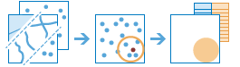 |
Finds features that are within a specified distance of features in the input layer. Distance can be measured along straight lines or viable paths of a travel mode. Statistics are then calculated for the nearby features. For example:
- Calculate the total population within five minutes of a proposed new store location.
- Calculate the number of freeway access ramps within five minutes of a proposed new store location to use as a measure of store accessibility.
Summarize Within |
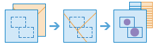 |
Finds areas (and portions of areas) that overlap between two layers and calculates statistics about the overlap. For example:
- Given a layer of watershed areas and a layer of land-use areas by land-use type, calculate total acreage of land-use type for each watershed.
- Given a layer of parcels in a county and a layer of city boundaries, summarize the average value of vacant parcels within each city.
Data Enrichment
These tools help you explore the character of areas. Detailed demographic data and statistics are returned for your chosen areas.
- Enrich Layer retrieves information about the people, places, and businesses in a specific area, or within a selected travel time or distance from a location.
Enrich Layer |
Retrieves information about the people, places, and businesses in a specific area, or within a selected travel time or distance from a location.
Find Locations
These tools are used to identify areas that meet a number of different criteria you specify. These criteria can be based upon attribute queries (for example, parcels that are vacant) and spatial queries (for example, within 1 kilometer of a river). The areas that are found can be selected from existing features (such as existing land parcels) or new features can be created where all the requirements are met.
- Find Existing Locations searches for existing areas in a layer that meet a series of criteria.
- Derive New Locations creates new areas from locations in your study area that meet a series of criteria.
- Find Similar Locations finds locations most similar to one or more reference locations based on criteria you specify.
- Choose Best Facilities choose the best locations for facilities by allocating locations that have demand for these facilities in a way that satisfies a given goal.
- Create Viewshed creates areas that are visible based on locations you specify.
- Create Watersheds creates catchment areas based on locations you specify.
- Trace Downstream determine the flow paths in a downstream direction from the locations you specify.
Find Existing Locations |
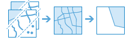 |
Selects existing features in your study area that meet a series of criteria you specify. These criteria can be based on attribute queries (for example, parcels that are vacant) and spatial queries (for example, within 1 mile of a river).
Derive New Locations |
Creates new features in your study area that meet a series of criteria you specify. These criteria can be based on attribute queries (for example, parcels that are vacant) and spatial queries (for example, within 1 mile of a river).
Find Similar Locations |
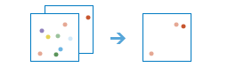 |
Finds the locations that are most similar to one or more reference locations based on criteria that you specify.
Choose Best Facilities |
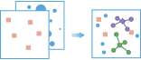 |
Choose the best locations for facilities by allocating locations that have demand for these facilities in a way that satisfies a given goal.
Create Viewshed |
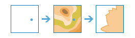 |
Creates areas that are visible based on locations you specify.
Create Watersheds |
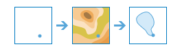 |
Creates catchment areas based on locations you specify.
Trace Downstream |

|
Determine the flow paths in a downstream direction from the locations you specify.
Analyze Patterns
These tools help you identify, quantify, and visualize spatial patterns in your data.
- Calculate Density takes known quantities of some phenomenon and spreads these quantities across the map.
- Find Hot Spots identifies statistically significant clustering in the spatial pattern of your data.
- Interpolate Points predicts values at new locations based on measurements found in a collection of points.
Calculate Density |
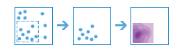 |
Density analysis takes known quantities of some phenomenon and spreads these quantities across the map. You can use this tool, for example, to show concentrations of lightning strikes or tornadoes, access to health care facilities, and population densities.
Find Hot Spots |

|
This tool creates a map showing any statistically significant spatial clustering present in your data. Use this tool to uncover unexpected hot spots (red) and cold spots (blue) of high and low home values, crime densities, traffic accident fatalities, unemployment or biodiversity, for example.
Interpolate Points |
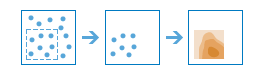 |
This tool allows you to predict values at new locations based on measurements found in a collection of points. The tool takes point data with values at each point and returns areas classified by predicted values. You can use this tool, for example, to predict rainfall levels across a watershed based on measurements taken at individual rain gauges.
Use Proximity
These tools help you answer one of the most common questions posed in spatial analysis: "What is near what?"
- Connect Origins to Destinations measures the travel time or distance between pairs of points.
- Create Buffers create areas of equal distance from features.
- Create Drive-Time Areas finds areas around locations that can be reached within a time period.
- Find Nearest identifies those places that are the closest to known locations.
- Plan Routes determines the best way to route a fleet of vehicles to visit many stops.
Connect Origins to Destinations |
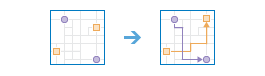 |
Connect Origins to Destinations measures the travel time or distance between pairs of points. The tool can report straight-line distances, road distances, or travel times. Using this tool, you can
- Calculate the total distance or time commuters travel on their home-to-work trips.
- Measure how far customers are traveling to shop at your stores. Use this information to define your market reach, especially when targeting advertising campaigns or choosing new store locations.
- Calculate the expected trip mileage for your fleet of vehicles. Afterward, run the Summarize Within tool to report mileage by state or other region.
You provide starting and ending points, and the tool returns a layer containing route lines, including measurements, between the paired origins and destinations.
Create Buffers |
A buffer is an area that covers a given distance from a point, line, or area feature.
Buffers are typically used to create areas that can be further analyzed using other tools such as Overlay Layers. For example, if the question is "What buildings are within one mile of the school?", the answer can be found by creating a one-mile buffer around the school and overlaying the buffer with the layer containing building footprints. The end result is a layer of those buildings within one mile of the school.
Create Drive-Time Areas |
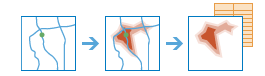 |
A drive-time area is the area that can be reached within a specified drive time or drive distance. Drive-time areas can help you answer questions such as:
- Where can I go from here within a 30-minute drive?
- Where can I go from here within a 30-minute drive at 6:00 p.m. during rush hour?
- What areas of town can the fire department reach within five minutes? How would fire-response coverage improve by building a new fire station here?
- What market areas does my business cover? What areas are within 10 miles of my stores?
Find Nearest |
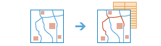 |
Measures the cost of traveling between incidents and facilities and determines which are closer to the other. The result is a layer showing the best routes between incidents and facilities along with the travel cost (time and distance) of each route. For example, you can use this tool to find the closest hospital to an accident or the closest ATM to your current location.
Plan Routes |
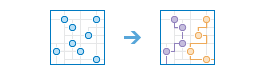 |
You provide a set of stops and the number of vehicles available to visit the stops, and Plan Routes determines how to efficiently assign the stops to the vehicles and route the vehicles to the stops.
Use this tool to plan work for a mobile team of inspectors, appraisers, in-home support service providers, and others; deliver or pick up items from remote locations; or offer transportation services to people.
Manage Data
These tools are used for both the day-to-day management of geographic data and for combining data prior to analysis.
- Dissolve Boundaries merges together areas that share a common boundary and a common attribute value.
- Extract Data creates new datasets by extracting features from your existing data.
- Merge Layers copies all the features from two or more existing layers into a new layer.
- Overlay Layers combines two or more layers into one single layer. You can think of overlay as peering through a stack of maps and creating a single map containing all the information found in the stack.
Dissolve Boundaries |
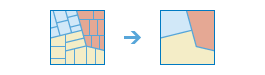 |
Areas that overlap or share a common boundary are merged together to form a single area.
You can control which boundaries are merged by specifying a field. For example, if you have a layer of counties, and each county has a State_Name attribute, you can dissolve boundaries using the State_Name attribute. Adjacent counties will be merged together if they have the same value for State_Name. The end result is a layer of state boundaries.
Extract Data |
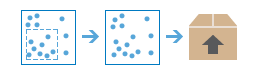 |
Creates a zip file, CSV, or KMZ of data from your layers and an area of interest that you specify.
Merge Layers |
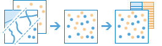 |
Copies features from two or more existing layers into a new layer, for example:
- I have three layers for England, Wales, and Scotland and I want a single layer of Great Britain.
- I have 12 layers and each contains parcel information for contiguous townships. I want to join them together into a single layer, keeping only the attributes that have the same name and type on the 12 input layers.
Overlay Layers |
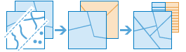 |
Overlay combines two or more layers into one single layer. You can think of overlay as peering through a stack of maps and creating a single map containing all the information found in the stack, for example:
- What parcels are within the 100-year floodplain? (Within is just another way of saying on top of.)
- What roads are within what counties?
- What land use is on top of what soil type?
- What wells are within abandoned military bases?